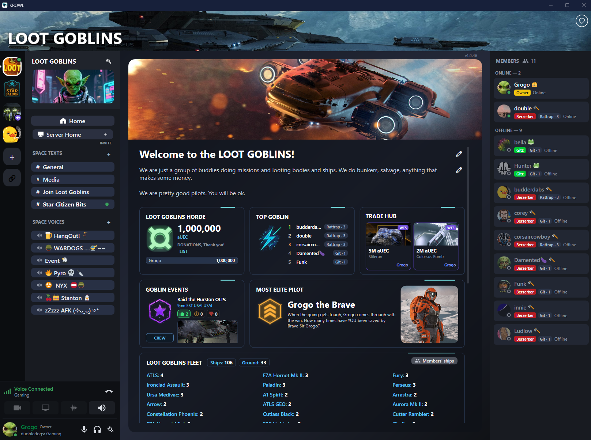
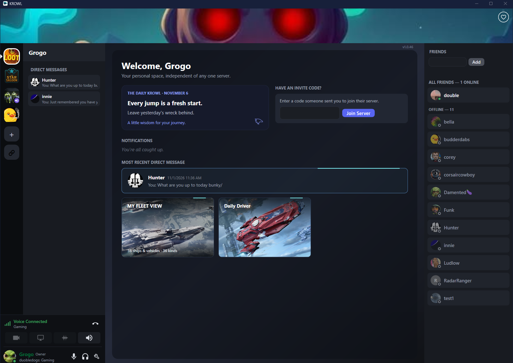
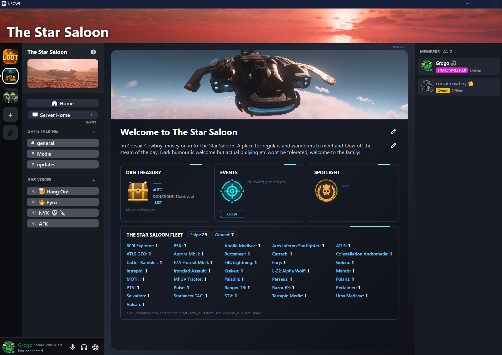

Stay Connected
Chat, share updates, and keep your team in sync across multiple channels.
KROWL is a communication and community management platform that brings people together. Whether you're part of a gaming community, organization, or business team, KROWL makes it easy to connect, communicate, and stay organized — all in one place.

Chat, share updates, and keep your team in sync across multiple channels.
Organize roles, permissions, and keep track of your community.
Maintain your fleet registry, track availability, and manage resources.
Your data stays in your hands with a focus on privacy and security.
From small groups to large organizations, KROWL scales with your needs.
WHY KROWL
Everything your community needs to look great and stay organized, free from day one. No subscriptions or paid upgrades required.
Give your community its own banner and look at no cost. Custom graphics are free for every community, big or small.
Leaderboards, events, fleet tracking and more come built in and free. Everything you need to set up your space is already there.
Track your org's fleet, members and events in the same app you chat in. No spreadsheets or extra tools on the side.
SEE KROWL IN ACTION
A closer look at the spaces, communities, and tools that bring your organization together.



KROWL is a passion project, and your support helps keep it growing. If you enjoy using the app, consider making a voluntary contribution via PayPal.
♥ Donate to KROWLEvery contribution is appreciated. Thank you!KROWL is free to download and use. Lots of free options for Users & Organizations!
Get the latest version for Windows and start managing your organization today.
We don't sell your data. Your privacy matters.